Contents
- 1. load elevation data (1x1 degree Matlab internal file)
- 2. load the coastlines data
- 3. plot nice initial model
- 3. determine the gridpoints with positive elevations (i.e. above sea-level)
- 4. calculate volume using the 1x1 degree grid
- 5. What's wrong with this approach to estimating the ocean volume?
- plot empty sphere
- plot empty sphere
- plot on the sphere
- now let's compute the volume of the ocean
- 6. volume of meltwater in the poles
- 7. compute the volume of water on antartica
- Now determine the new coastline from adding all of that water to the ocean
- b) Greenland above sea level
clear all close all clc % HW4 saveFigs = 0; % set to 1 to save figures
1. load elevation data (1x1 degree Matlab internal file)
load( 'topo.mat' ); % matlab knows where this file is % This a raster data type
2. load the coastlines data
load('coastlines'); % load built-in MATLAB data called coastlines % This is a vector data type
3. plot nice initial model
% setup topo map limits LAT = topolatlim(1):topolatlim(2); LON = topolonlim(1):topolonlim(2); [lon, lat] = meshgrid(LON,LAT); % compute the lat/lon of every grid point in topo % setup the figure properties that we want h = figure; % your comment h.InvertHardcopy = 'off'; % your comment h.Color = 'k'; % your comment h.Position = [100 100 1000 500]; % your comment h.PaperPositionMode = 'auto'; % your comment % setup the map axes ax = axesm('Mollweid', 'Frame', 'on', 'Grid', 'on'); setm(ax,'MLabelLocation',60); setm(ax,'PLabelLocation',30); mlabel('MLabelParallel',0); % set the Meridian label at the zero parallel plabel('PLabelMeridian',-25); % set the Parallel label at the 15W meridian axis('off'); % make sure axis is off -- this removes the non-ellipsoidal background white color setm(ax,'FontColor',[0.9 0.9 0.9]); % to change axesm properties you have to use setm, not ax.PropertyName like other handles setm(ax,'GColor',[0.9 0.9 0.9]); % plot the topo data pcolorm(lat,lon,topo); % plot the matrix of elevations on the map hold on; demcmap(topo); % give it a better colormap plotm(coastlat, coastlon,'r'); % add a colorbar and set properties c = colorbar; c.Label.String = 'Elevation [m]'; c.Color = [0.9 0.9 0.9]; set( findall( h, '-property', 'FontSize' ), 'FontSize', 16 ); set( findall( h, '-property', 'FontWeight' ), 'FontWeight', 'Bold' ); % axesmui; % can use GUI to set some properties if saveFigs print(h,'./basemap.png','-dpng'); end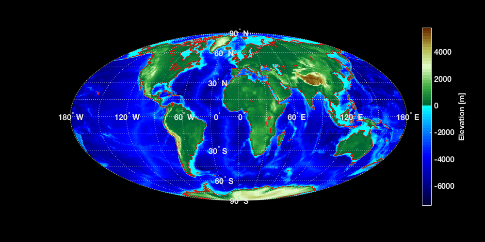
3. determine the gridpoints with positive elevations (i.e. above sea-level)
% use logical indexing to find point above sea level [iy, ix] = find( topo > 0 ); ocean = topo; % copy the topography grid % set all topography above sea-level to 0 altitude for ii = 1 : size( ix, 1 ) ocean( iy(ii), ix(ii) ) = 0; end ocean = ocean .* 1e-3; % [km] convert ocean depth to km % plot the new topography grid data with no points above sea-level % setup the figure properties that we want h = figure; % your comment h.InvertHardcopy = 'off'; % your comment h.Color = 'k'; % your comment h.Position = [100 100 1000 500]; % your comment h.PaperPositionMode = 'auto'; % your comment % setup the map axes ax = axesm('Mollweid', 'Frame', 'on', 'Grid', 'on'); setm(ax,'MLabelLocation',60); setm(ax,'PLabelLocation',30); mlabel('MLabelParallel',0); % set the Meridian label at the zero parallel plabel('PLabelMeridian',-25); % set the Parallel label at the 15W meridian axis('off'); % make sure axis is off -- this removes the non-ellipsoidal background white color setm(ax,'FontColor',[0.9 0.9 0.9]); % to change axesm properties you have to use setm, not ax.PropertyName like other handles setm(ax,'GColor',[0.9 0.9 0.9]); % plot the topo data pcolorm(lat,lon,ocean); % plot the matrix of elevations on the map hold on; demcmap(topo*1e-3); % give it a better colormap (make sure to convert to km to match ocean) plotm(coastlat, coastlon,'r'); % add a colorbar and set properties c = colorbar; c.Label.String = 'Elevation [km]'; c.Color = [0.9 0.9 0.9]; set( findall( h, '-property', 'FontSize' ), 'FontSize', 16 ); set( findall( h, '-property', 'FontWeight' ), 'FontWeight', 'Bold' ); % axesmui; % can use GUI to set some properties if saveFigs print(h,'./ocean.png','-dpng'); end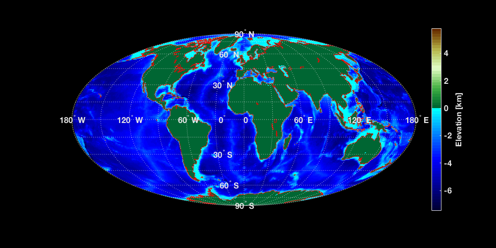
4. calculate volume using the 1x1 degree grid
% Now we want to calculate the volume in the oceans as of today. This means % we need to multiply the surface area by the thickness. As a first go, % let's compute the surface area at the equator? [nLat, nLon] = size( topo ); % Part a) compute the surface area of 1x1 degree grid R = 6371; % [km] radius of Earth dlonRad = 2 * pi / nLon; % [rad] distance between 2 pixel in Longitude direction dlonKM = R * dlonRad; % [km] distance dlatRad = pi / nLat; % [rad] distance between 2 pixel in Latitude direction dlatKM = R * dlatRad; % [km] distance surfaceArea = dlatKM * dlonKM; % [km^2] pixelVolume = -1 .* ocean .* surfaceArea; % [km^3] correct depth for sign volume_A = sum( sum( pixelVolume ) );
5. What's wrong with this approach to estimating the ocean volume?
% Well, the surface area should change with latitude!! % How can we do better?? We can compute a more accurate surface area that % accounts for the latitude of each pixel. % The trick is to compute the correct surface area is to use two spherical % caps. You compute the surface area of one spherical cap at the bottom % latitude and one at the top latitude. Then you subtract those two. What % you have left is the surface area around the circumference of the sphere % between two lines of latitude. Then you just take whatever percentage of % that area you want based on your longitudinal width. % So let's compute the different surface areas from one pole to the other % at 1 deg latitude increments. for ii = 1 : numel( LAT ) - 1 capArea(ii) = ( 2 * pi * R^2 ) .* abs( sind( LAT(ii) ) - sind( LAT(ii+1) ) ); % [km^2] end % Now let's take the percentage of that related to 1 degree of longitude % change dlonPerc = 1/360; % [unitless] capArea = capArea .* dlonPerc; % [km^2] % Let's now make a matrix of the surface area of each pixel for jj = 1 : numel( LON ) - 1 pixelArea(:,jj) = capArea; end h = figure; imagesc( LON, LAT, pixelArea ); c = colorbar; set(h,'PaperPositionMode','Auto'); if saveFigs print(h,'./gridArea.png','-dpng'); end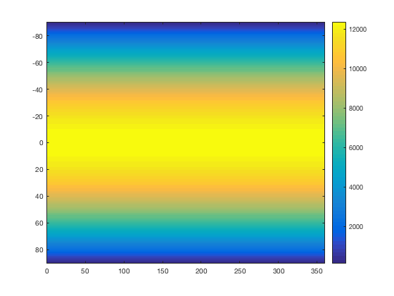
plot empty sphere
h = figure; [x,y,z] = sphere(50); % create a sphere s = surface(x,y,z); % plot spherical surface s.CData = pixelArea .* 0; % set color data to topographic data s.FaceColor = 'texturemap'; % use texture mapping % s.EdgeColor = 'none'; % remove edges % s.FaceLighting = 'gouraud'; % preferred lighting for curved surfaces % s.SpecularStrength = 0.4; % change the strength of the reflected light % light('Position',[-1 0 1]) % add a light axis square off % set axis to square and remove axis view([-30,30]) % set the viewing angle set(h,'PaperPositionMode','Auto'); if saveFigs print(h,'./emptySphere.png','-dpng'); end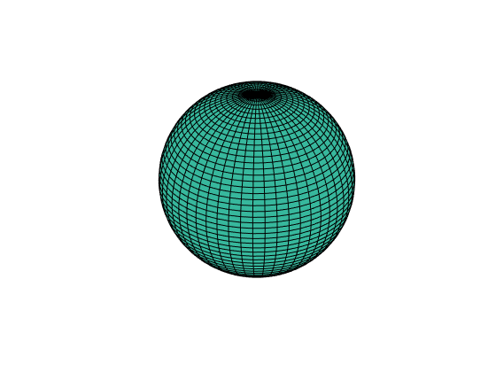
plot empty sphere
h = figure; [x,y,z] = sphere(50); % create a sphere s = surface(x,y,z); % plot spherical surface upperCap = pixelArea .* 0 + 1; upperCap(1:120,:) = 0; s.CData = upperCap; % set color data to topographic data s.FaceColor = 'texturemap'; % use texture mapping s.EdgeColor = 'none'; % remove edges % s.FaceLighting = 'gouraud'; % preferred lighting for curved surfaces % s.SpecularStrength = 0.4; % change the strength of the reflected light % light('Position',[-1 0 1]) % add a light axis square off % set axis to square and remove axis view([-30,30]) % set the viewing angle set(h,'PaperPositionMode','Auto'); if saveFigs print(h,'./upperSphere.png','-dpng'); end h = figure; [x,y,z] = sphere(50); % create a sphere s = surface(x,y,z); % plot spherical surface upperCap = pixelArea .* 0 + 1; upperCap(1:119,:) = 0; s.CData = upperCap; % set color data to topographic data s.FaceColor = 'texturemap'; % use texture mapping s.EdgeColor = 'none'; % remove edges % s.FaceLighting = 'gouraud'; % preferred lighting for curved surfaces % s.SpecularStrength = 0.4; % change the strength of the reflected light % light('Position',[-1 0 1]) % add a light axis square off % set axis to square and remove axis view([-30,30]) % set the viewing angle set(h,'PaperPositionMode','Auto'); if saveFigs print(h,'./lowerSphere.png','-dpng'); end h = figure; [x,y,z] = sphere(50); % create a sphere s = surface(x,y,z); % plot spherical surface upperCap = pixelArea .* 0 + 1; upperCap(1:119,:) = 0; upperCap(121:end,:) = 0; s.CData = upperCap; % set color data to topographic data s.FaceColor = 'texturemap'; % use texture mapping s.EdgeColor = 'none'; % remove edges % s.FaceLighting = 'gouraud'; % preferred lighting for curved surfaces % s.SpecularStrength = 0.4; % change the strength of the reflected light % light('Position',[-1 0 1]) % add a light axis square off % set axis to square and remove axis view([-30,30]) % set the viewing angle set(h,'PaperPositionMode','Auto'); if saveFigs print(h,'./diffSphere.png','-dpng'); end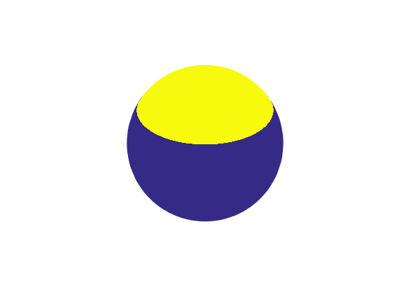 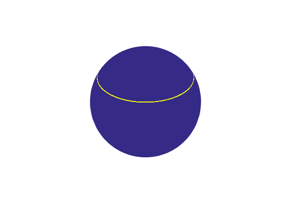
plot on the sphere
h = figure; [x,y,z] = sphere(50); % create a sphere s = surface(x,y,z); % plot spherical surface s.CData = pixelArea; % set color data to topographic data s.FaceColor = 'texturemap'; % use texture mapping % s.EdgeColor = 'none'; % remove edges % s.FaceLighting = 'gouraud'; % preferred lighting for curved surfaces % s.SpecularStrength = 0.4; % change the strength of the reflected light % light('Position',[-1 0 1]) % add a light axis square off % set axis to square and remove axis view([-30,30]) % set the viewing angle c = colorbar; c.Label.String = 'Surface area [km^2]'; set(h,'PaperPositionMode','Auto'); if saveFigs print(h,'./sphereArea.png','-dpng'); end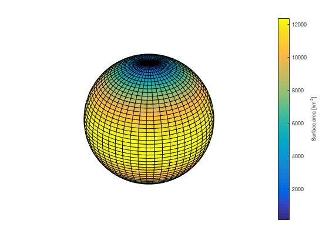
now let's compute the volume of the ocean
pixelVolume = -1 .* ocean .* pixelArea; % [km^3] correct depth for sign volume_Current = sum( sum( pixelVolume ) ); figure; [x,y,z] = sphere(50); % create a sphere s = surface(x,y,z); % plot spherical surface s.CData = pixelVolume; % set color data to topographic data s.FaceColor = 'texturemap'; % use texture mapping % s.EdgeColor = 'none'; % remove edges % s.FaceLighting = 'gouraud'; % preferred lighting for curved surfaces % s.SpecularStrength = 0.4; % change the strength of the reflected light % light('Position',[-1 0 1]) % add a light axis square off % set axis to square and remove axis view([-30,30]) % set the viewing angle c = colorbar; c.Label.String = 'Volume [km^3]'; fprintf('Difference between two methods = %e\n', volume_A - volume_Current );
Difference between two methods = 4.856803e+08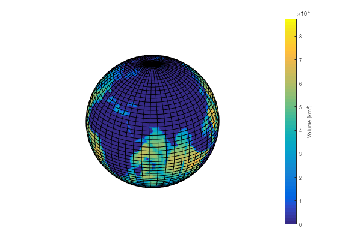
%-------------------------------------------------------------------------- %-------------------------------------------------------------------------- %-------------------------------------------------------------------------- %-------------------------------------------------------------------------- % Now let's melt antartica and see what happens %-------------------------------------------------------------------------- %-------------------------------------------------------------------------- %-------------------------------------------------------------------------- %--------------------------------------------------------------------------
6. volume of meltwater in the poles
% a) Antarctica is entirely below 60 deg S antarcticaLatitudeIndex = 1 : 30; % indices of the latitudes covering Antarctica antarcticaTopo = topo( antarcticaLatitudeIndex, : ); % part of topo that is Antarctica [ixA, iyA] = find( antarcticaTopo < 0 ); % parts below zero elevation do not have ice for ii = 1 : size( ixA, 1 ) antarcticaTopo( ixA(ii), iyA(ii) ) = 0; % so set no ice areas to zero end % setup the figure properties that we want h = figure; % your comment h.InvertHardcopy = 'off'; % your comment h.Color = 'k'; % your comment h.Position = [100 100 1000 500]; % your comment h.PaperPositionMode = 'auto'; % your comment % setup the map axes ax = axesm('Mollweid', 'Frame', 'on', 'Grid', 'on'); setm(ax,'MLabelLocation',60); setm(ax,'PLabelLocation',30); mlabel('MLabelParallel',0); % set the Meridian label at the zero parallel plabel('PLabelMeridian',-25); % set the Parallel label at the 15W meridian axis('off'); % make sure axis is off -- this removes the non-ellipsoidal background white color setm(ax,'FontColor',[0.9 0.9 0.9]); % to change axesm properties you have to use setm, not ax.PropertyName like other handles setm(ax,'GColor',[0.9 0.9 0.9]); antarcticaTopo = antarcticaTopo .* 1e-3; % [km] convert % plot the topo data pcolorm(LAT(antarcticaLatitudeIndex),LON,antarcticaTopo); % plot the matrix of elevations on the map hold on; % demcmap(topo*1e-3); % give it a better colormap (make sure to convert to km to match ocean) plotm(coastlat, coastlon,'r'); % add a colorbar and set properties c = colorbar; c.Label.String = 'Elevation [km]'; c.Color = [0.9 0.9 0.9]; set( findall( h, '-property', 'FontSize' ), 'FontSize', 16 ); set( findall( h, '-property', 'FontWeight' ), 'FontWeight', 'Bold' ); if saveFigs print(h,'./antarctica.png','-dpng'); end
7. compute the volume of water on antartica
pixelVolume = antarcticaTopo .* pixelArea(antarcticaLatitudeIndex,:); % [km^3] correct depth for sign pixelVolume = pixelVolume .* 0.9; % [km^3] water volume is about 90% of ice volume antarcticaVolume = sum( sum( pixelVolume ) ); % [km^3] total volume fprintf('Volume of water on antarctica = %e\n', antarcticaVolume ); % setup the figure properties that we want h = figure; % your comment h.InvertHardcopy = 'off'; % your comment h.Color = 'k'; % your comment h.Position = [100 100 1000 500]; % your comment h.PaperPositionMode = 'auto'; % your comment % setup the map axes ax = axesm('Mollweid', 'Frame', 'on', 'Grid', 'on'); setm(ax,'MLabelLocation',60); setm(ax,'PLabelLocation',30); mlabel('MLabelParallel',0); % set the Meridian label at the zero parallel plabel('PLabelMeridian',-25); % set the Parallel label at the 15W meridian axis('off'); % make sure axis is off -- this removes the non-ellipsoidal background white color setm(ax,'FontColor',[0.9 0.9 0.9]); % to change axesm properties you have to use setm, not ax.PropertyName like other handles setm(ax,'GColor',[0.9 0.9 0.9]); % plot the topo data pcolorm(LAT(antarcticaLatitudeIndex),LON,pixelVolume); % plot the matrix of elevations on the map hold on; % demcmap(topo*1e-3); % give it a better colormap (make sure to convert to km to match ocean) plotm(coastlat, coastlon,'r'); % add a colorbar and set properties c = colorbar; c.Label.String = 'Volume [km^3]'; c.Color = [0.9 0.9 0.9]; set( findall( h, '-property', 'FontSize' ), 'FontSize', 16 ); set( findall( h, '-property', 'FontWeight' ), 'FontWeight', 'Bold' ); if saveFigs print(h,'./antarcticaVolume.png','-dpng'); end
Volume of water on antarctica = 2.444419e+07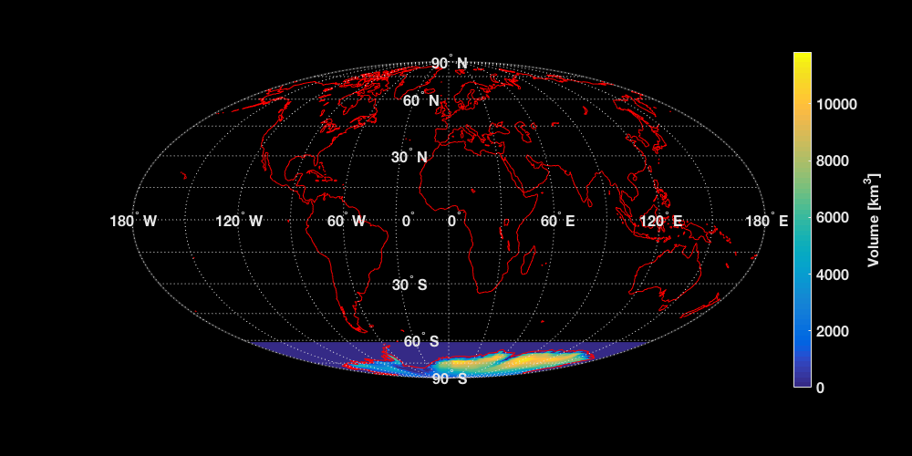
Now determine the new coastline from adding all of that water to the ocean
% We do this by incrementally adding one meter of water to the current sea % level and computing the new volume. When the new volume minus the current % volume equals the volume that we just computed is stored on Antarctica % then we have found the solution to how much sea-level would rise if % Antarctica melted. % Make a vector of incremental increases slIncrease = 1 : 100; % [m] incremental steps nSteps = numel( slIncrease ); % number of steps for iSlIncrease = 1 : nSteps % compute the new ocean map if sea-level rose oceanNew = topo - slIncrease( iSlIncrease ); [iy,ix] = find( topo > slIncrease(iSlIncrease) ); for ii = 1 : size( ix, 1 ) oceanNew( iy(ii), ix(ii) ) = 0; % set all height above sea-level to zero end % compute the total volume for this increased sea-level oceanNew = oceanNew ./ 1000; % [km] convert to meters oceanNew = oceanNew .* -1; % change direction of positive volNew = oceanNew .* pixelArea; % [km^3] % c) new total is new volume minus old volume dVol( iSlIncrease ) = sum( sum( volNew ) ) - volume_Current; end % sea-level index that gives closest volume [~,slIdx] = min( abs( antarcticaVolume - dVol ) ); % d) show result; estimated rise is 80 m h = figure; plot( slIncrease, dVol, 'ko' ); hold on; grid on; plot( [0 max(slIncrease)], [antarcticaVolume antarcticaVolume], 'r' ); xlabel( 'Sea-level rise [m]' ); ylabel( 'Volume of meltwater added to oceans [km^3]' ); title( 'Sea-level rise influence on oceans volume' ); legend('Tested sea-level heights','Volume from Antarctica'); legend('Location','NorthWest'); legend boxoff; set(h,'PaperPositionMode','Auto'); if saveFigs print(h,'./seaLevelModel.png','-dpng'); end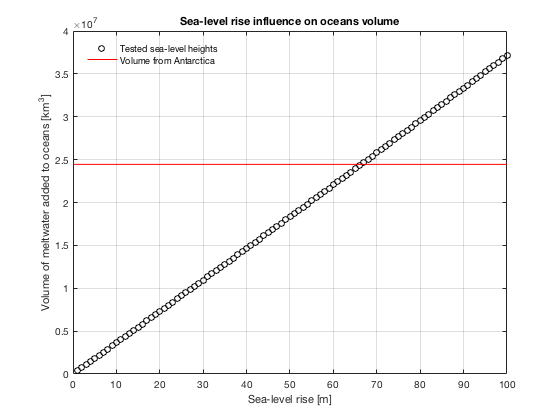
% setup the figure properties that we want h = figure; % your comment h.InvertHardcopy = 'off'; % your comment h.Color = 'k'; % your comment h.Position = [100 100 1000 500]; % your comment h.PaperPositionMode = 'auto'; % your comment % setup the map axes ax = axesm('Mollweid', 'Frame', 'on', 'Grid', 'on'); setm(ax,'MLabelLocation',60); setm(ax,'PLabelLocation',30); mlabel('MLabelParallel',0); % set the Meridian label at the zero parallel plabel('PLabelMeridian',-25); % set the Parallel label at the 15W meridian axis('off'); % make sure axis is off -- this removes the non-ellipsoidal background white color setm(ax,'FontColor',[0.9 0.9 0.9]); % to change axesm properties you have to use setm, not ax.PropertyName like other handles setm(ax,'GColor',[0.9 0.9 0.9]); % plot the topo data pcolorm(lat,lon,topo); % plot the matrix of elevations on the map hold on; demcmap(topo); % give it a better colormap (make sure to convert to km to match ocean) plotm(coastlat, coastlon,'r'); contourm( LAT(1:end-1), LON(1:end-1), topo, [slIncrease(slIdx) slIncrease(slIdx)],'g'); % add a colorbar and set properties c = colorbar; c.Label.String = 'Elevation [m]'; c.Color = [0.9 0.9 0.9]; set( findall( h, '-property', 'FontSize' ), 'FontSize', 16 ); set( findall( h, '-property', 'FontWeight' ), 'FontWeight', 'Bold' ); if saveFigs print(h,'./antarcticaSeaLevelRise.png','-dpng'); end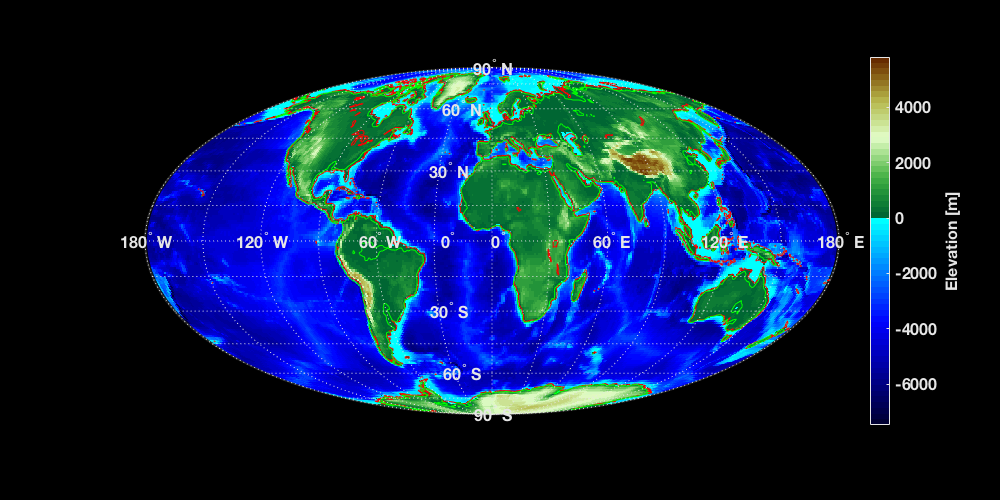
b) Greenland above sea level
% selected boundary of Greenland by hand xx = [ 297.3443, 287.1840, 303.6341, 321.0519, 352.9845]; % note this is now between 0 to 360, not -180 to 180 yy = [ 177.1051, 166.4609, 157.2682, 139.3666, 175.6536]; % note this is now between 0 to 180, not -90 to 90 % to close polygon by appending beginning to end xx = [ xx, xx(1) ]; yy = [ yy, yy(1) ]; % determine the points that lie within the boudary [X, Y] = meshgrid( 1:360, 1:180); in = inpolygon( X, Y, xx, yy ); % true if in polygon, false otherwise topoGreenland = in .* topo; % get the greenland altitudes [ixG, iyG] = find( topoGreenland < 0 ); for ii = 1 : size( ixG, 1 ) % set any elevations below sea level to zero topoGreenland( ixG(ii), iyG(ii) ) = 0; end topoGreenland = topoGreenland ./ 1000; % [km] convert altitude to km volumeGreenland = topoGreenland .* pixelArea; % [km^3] VolG = sum(sum(volumeGreenland)) * 0.9; % [km^3] % c) total volume is Greenland plus Antarctica % meltwater = VolG + VolA; % setup the figure properties that we want h = figure; % your comment h.InvertHardcopy = 'off'; % your comment h.Color = 'k'; % your comment h.Position = [100 100 1000 500]; % your comment h.PaperPositionMode = 'auto'; % your comment % setup the map axes ax = axesm('Mollweid', 'Frame', 'on', 'Grid', 'on'); setm(ax,'MLabelLocation',60); setm(ax,'PLabelLocation',30); mlabel('MLabelParallel',0); % set the Meridian label at the zero parallel plabel('PLabelMeridian',-25); % set the Parallel label at the 15W meridian axis('off'); % make sure axis is off -- this removes the non-ellipsoidal background white color setm(ax,'FontColor',[0.9 0.9 0.9]); % to change axesm properties you have to use setm, not ax.PropertyName like other handles setm(ax,'GColor',[0.9 0.9 0.9]); % plot the topo data pcolorm(lat,lon,topo); % plot the matrix of elevations on the map hold on; demcmap(topo); % give it a better colormap (make sure to convert to km to match ocean) plotm( yy-90, xx, 'r' ); % plot the boundary plotm(Y(in)-90,X(in),'m.'); % plot the points % add a colorbar and set properties c = colorbar; c.Label.String = 'Elevation [m]'; c.Color = [0.9 0.9 0.9]; set( findall( h, '-property', 'FontSize' ), 'FontSize', 16 ); set( findall( h, '-property', 'FontWeight' ), 'FontWeight', 'Bold' ); if saveFigs print(h,'./greenlandNodes.png','-dpng'); end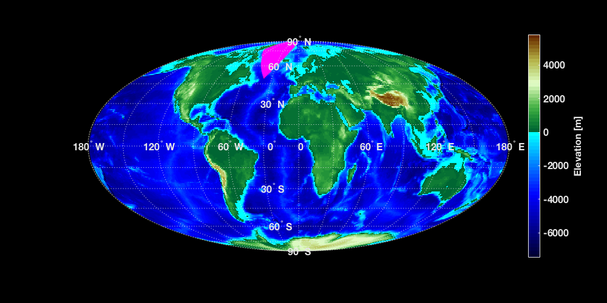